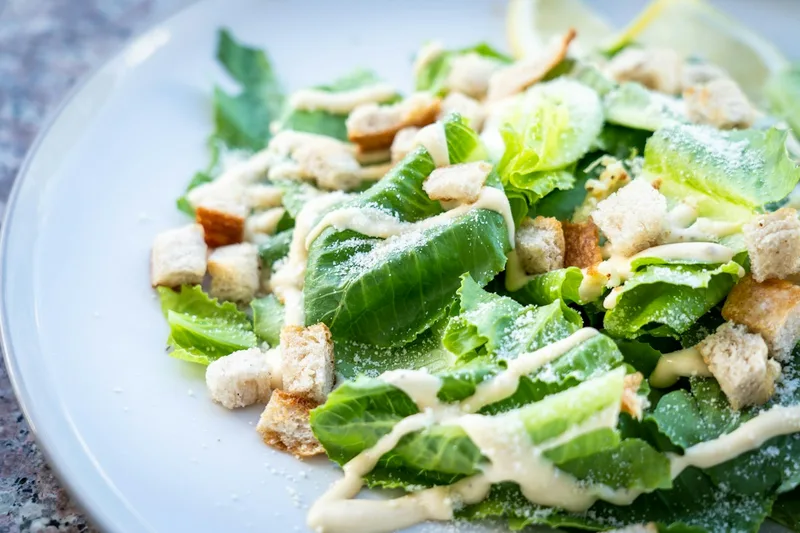
/images/menu/salade-cesar.webp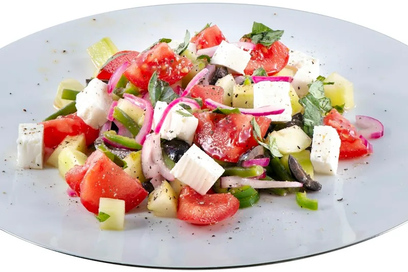
/images/menu/salade-grecque.webp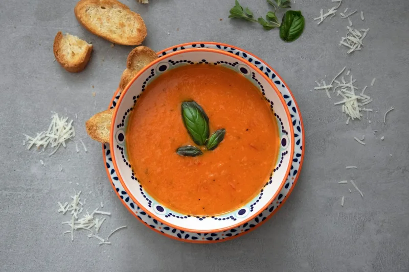
/images/menu/soupe-tomate.webp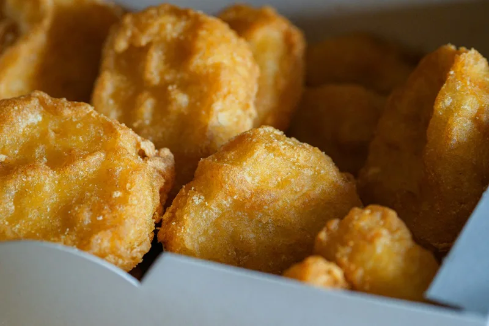
/images/menu/nuggets-poulet.webp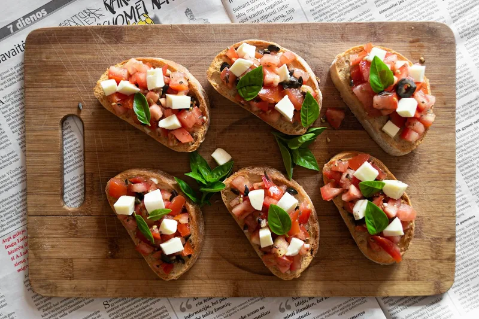
/images/menu/bruschetta.webp
/images/menu/salade-cesar.webp
/images/menu/salade-grecque.webp
/images/menu/soupe-tomate.webp
/images/menu/nuggets-poulet.webp
/images/menu/bruschetta.webp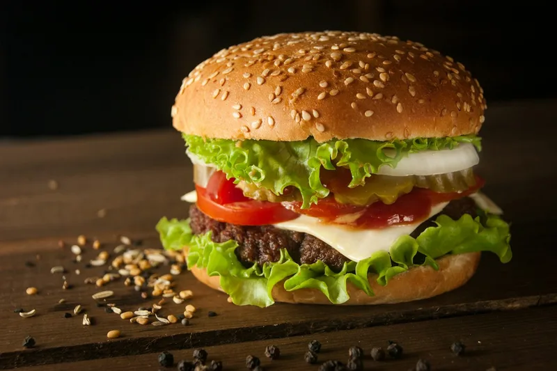
/images/menu/burger-classique.webp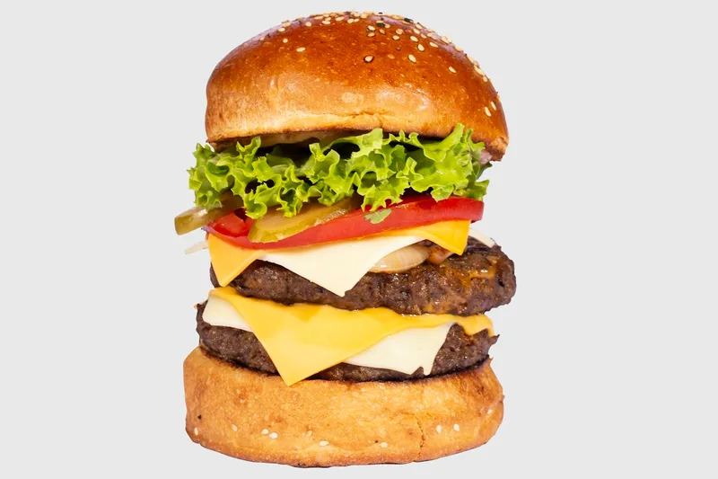
/images/menu/cheeseburger.webp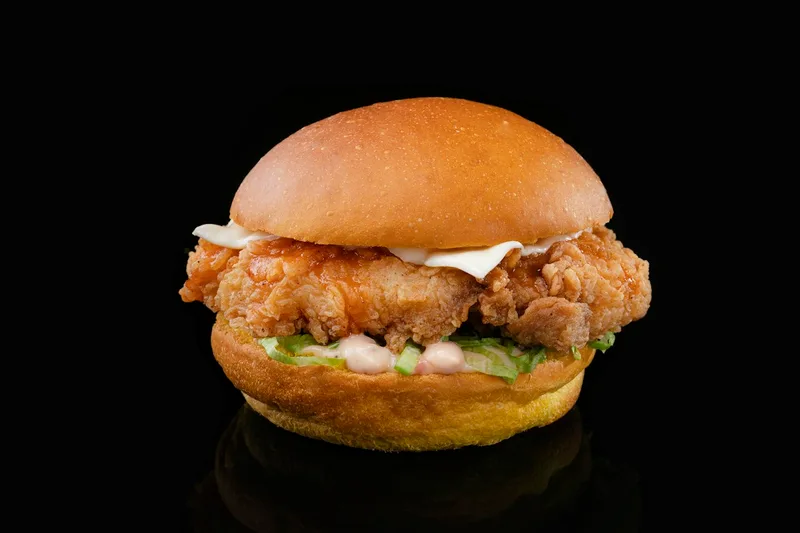
/images/menu/burger-poulet-croustillant.webp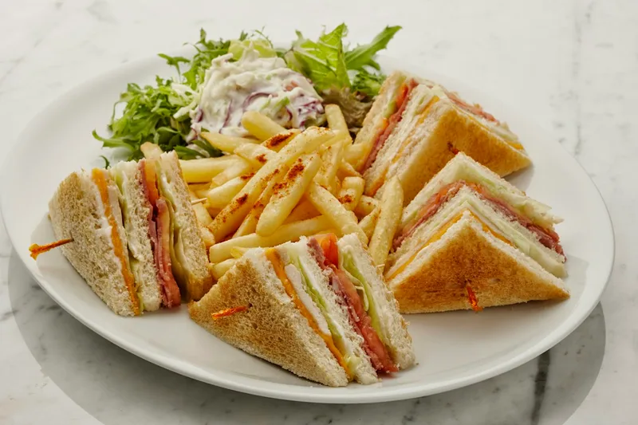
/images/menu/club-sandwich.webp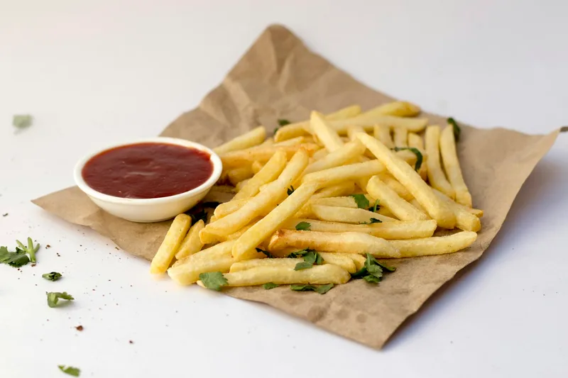
/images/menu/frites.webp
/images/menu/pizza-margherita.webp
/images/menu/pizza-pepperoni.webp
/images/menu/pizza-4-fromages.webp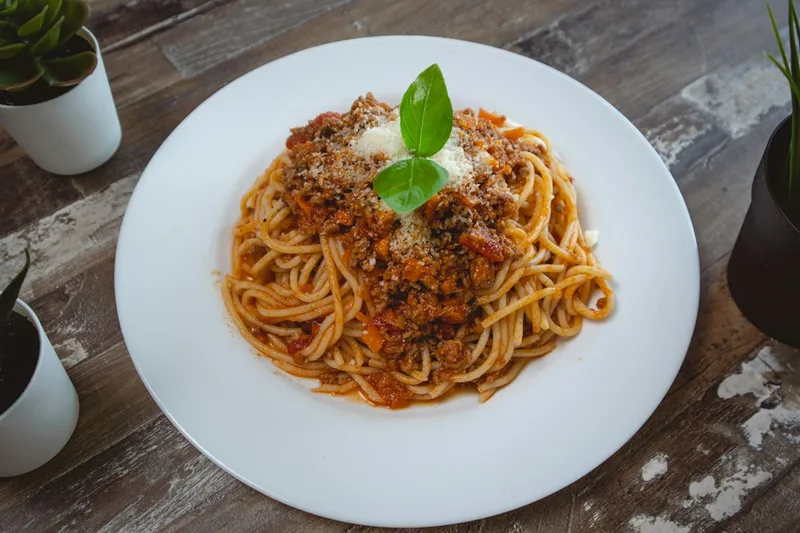
/images/menu/spaghetti-bolognaise.webp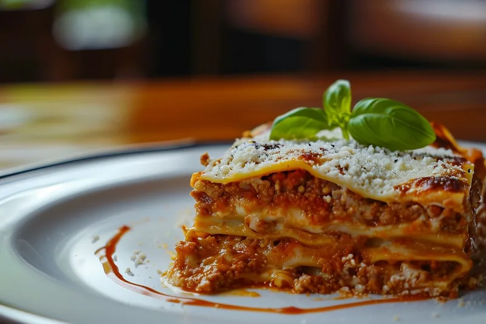
/images/menu/lasagnes.webp
/images/menu/brownie.webp
/images/menu/tiramisu.webp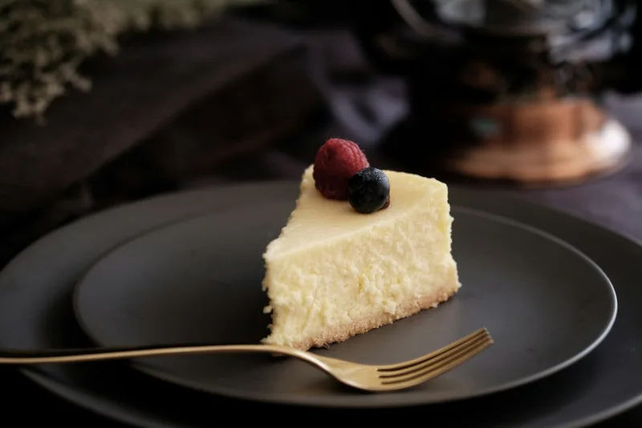
/images/menu/cheesecake.webp
/images/menu/crepe-chocolat.webp
/images/menu/glace.webp
/images/menu/jus-orange-presse.webp
/images/menu/citronnade.webp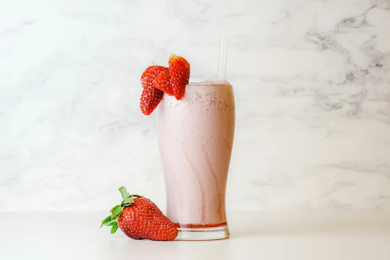
/images/menu/milkshake.webp
/images/menu/boisson-gazeuse.webp
/images/menu/eau-minerale.webp